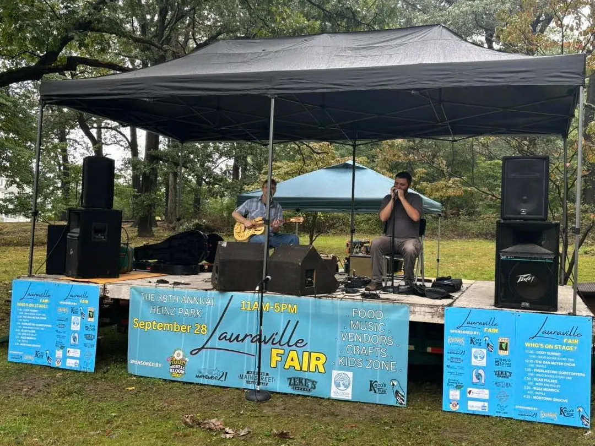

Save the Stage!
For decades, one stage has been part of Lauraville’s celebrations. Help us buy it, restore it, and keep it serving the whole neighborhood.
Tax-deductible. Secure checkout through Zeffy.
The story
You’ve seen it at The Lauraville Fair for years. Hamilton-Lauraville Main Street has used it for events at The Lot. Friends of Herring Run has used it at fundraisers. Community associations have held centennials and other celebrations on it. All that time, it has been generously lent out by our neighbor John K., owner of Amendment 21.
Now John is offering to sell the stage to The Lauraville Fair at a generous discount, so it can keep serving the community. We want to buy it, restore it, and make it available to local nonprofits and community groups at cost.
Years of use have taken their toll. The platforms need new plywood and framing, the stairs need rebuilding, and the trailer it rides on needs tires, a new jack, and a paint job. Then it needs to be titled, insured, and parked somewhere safe. Volunteers will do the work, so your gift goes to materials and the essentials.
Where the money goes
- Buy the stage and trailer$1,500
- New deck: plywood, 2×6 framing, hardware, paint$1,600
- New stairs with a handrail$200
- Trailer: 4 tires, bearings and brakes, tongue jack, lights, paint$1,400
- Title, registration, inspection, and first-year insurance$1,100
- Parking (first year)$600
- Contingency for surprises$1,100
- Goal$7,500
If we raise more than the goal, the extra goes toward keeping the stage in good shape.
Can you help another way?
Donations of materials and skills stretch every dollar. We’re looking for lumber, paint, trailer tires, a tongue jack, help from someone handy with trailers, and a safe place to park the stage. Businesses that donate will be thanked on a sign on the stage. Email us to help out.
Every dollar reaches the project
We use Zeffy, which charges nonprofits no platform or card fees. At checkout Zeffy may suggest an optional tip to support Zeffy itself. That tip doesn't go to us, and you can set it to $0.
Prefer to give by check?
Make it out to The Lauraville Fair Inc., write "Lauraville Cares" in the memo line, and mail it to 2605 Ailsa Ave, Baltimore, MD 21214.
One project at a time
Our volunteer board approves each project, and we pay costs directly rather than handing out cash. When a project is fully funded, we post the results here and start the next one.
Past projects
What Lauraville has funded together.
The stage is our first project. Funded projects will appear here.
Have an idea for a project?
Beautification, equipment for a school or neighborhood group, something the whole community can use. Tell us what it is, what it costs, and who it helps.
Suggest a project